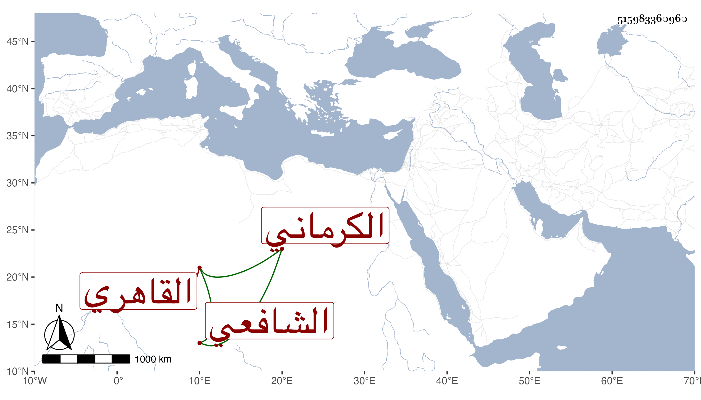

0902Sakhawi.DawLamic.ITO20230111-ara1.EIS1600.515983360960
Biography ID: 515983360960
1057
يحيى بن الجمال يوسف بن التقي يحيى بن الأستاذ الشمس محمد بن يوسف التقي الكرماني الأصل القاهري الشافعي الماضي جده قريبا والآتي أبوه . ولد في يوم الأحد سادس رجب سنة إحدى وخمسين وثمانمائة ونشأ في كنف أبيه فحفظ القرآن وأربعي النووي والبهجة وألفية النحو عند الفقيه عمر التتائي ، وعرض على المناوي والبلقيني وغيرهما وسمع على جماعة وجاور مع والده سنة خمس وستين وقبلها أشهرا من سنة اثنتين وستين ولازم الجوجري في الفقه والأصلين والعربية وغيرها والفخر المقسي في الفقه والشمس الكركي في الصرف والعربية في آخرين وجود الخط على يس وكتب به لنفسه ولغيره وتميز وحضر عندي قليلا وانعزل مقبلا على شأنه متقنعا باليسير مع عقل وأدب وفضل .
